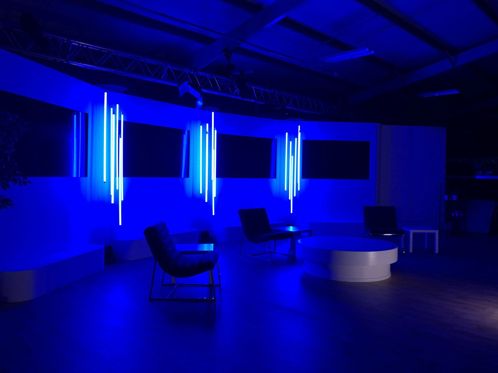

An AGM or results presentation is the virtual event with the least tolerance for error. It's on the record, the audience includes analysts and shareholders who notice everything, and a stream failure isn't an inconvenience — it's a governance question. Our approach is conservative by design: redundant everything, rehearsed failure drills, a standby delivery path, and a recording chain that captures the whole meeting cleanly.
We produce AGMs and investor events from boardrooms, venues and studios, delivering a secure webcast — password or registration-gated where required — with shareholder questions submitted and moderated, remote board members on managed links, and board presenters coached to camera. We work alongside your registrar or AGM platform provider and your company secretary.

What a VSE AGM or investor event includes
Secure webcast delivery
Gated stream delivery with a standby path, tested on the networks your audience uses.
Full redundancy
Dual encoders, dedicated line plus bonded backup, UPS on every critical device, rehearsed failure drills.
Presenter production
Board presenters framed, lit and coached; prompter and confidence monitor for statements.
Shareholder Q&A
Written questions submitted, moderated and put to the board on screen; remote spoken questions where required.
Recording for the record
Clean programme and ISO recordings retained to your policy; transcript on request.
Platform coordination
Integration with your registrar's AGM platform or webcast provider, and your company secretary's process.
Guides for this kind of event
Redundancy: plan for the failure you'll actually get
Everything that has gone wrong on our shows in six years, ranked by how often, with the fix for each.
Delivery: from the encoder to ten thousand screens
CDNs, adaptive bitrate, latency modes and players — what happens between your gallery and the viewer, and the decisions that affect whether it works on their network.
Presenting to camera: a room of one
Executives who command a conference hall often freeze in front of a lens. How to set presenters up to look natural, read well and take direction on a streamed event.
Registration and data: collect less, use it better
Registration flows that don't lose people, the attendee data that's worth having, and the GDPR questions organisers should be able to answer before a platform goes live.
AGM & investor event questions
Can the webcast be restricted to shareholders?
Yes — via registration, password or integration with your registrar's platform. We test access in advance on typical corporate networks.
What redundancy do you provide?
Dual encoders, a dedicated wired line with bonded cellular backup, UPS power on the gallery, a standby stream destination and rehearsed recovery procedures.
Can remote board members take part?
Yes, on managed broadcast links with technical checks in advance, appearing on the webcast and in the room.
Do you keep the recording?
We retain clean recordings to whatever period your policy requires and delete on instruction, documented.